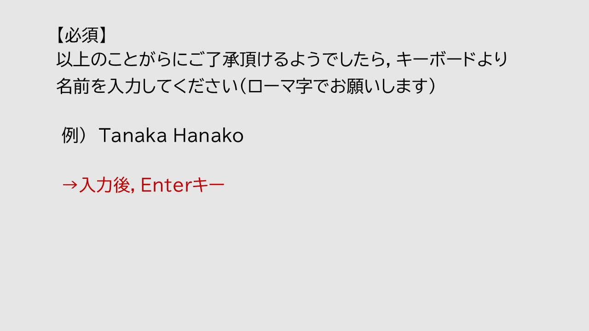
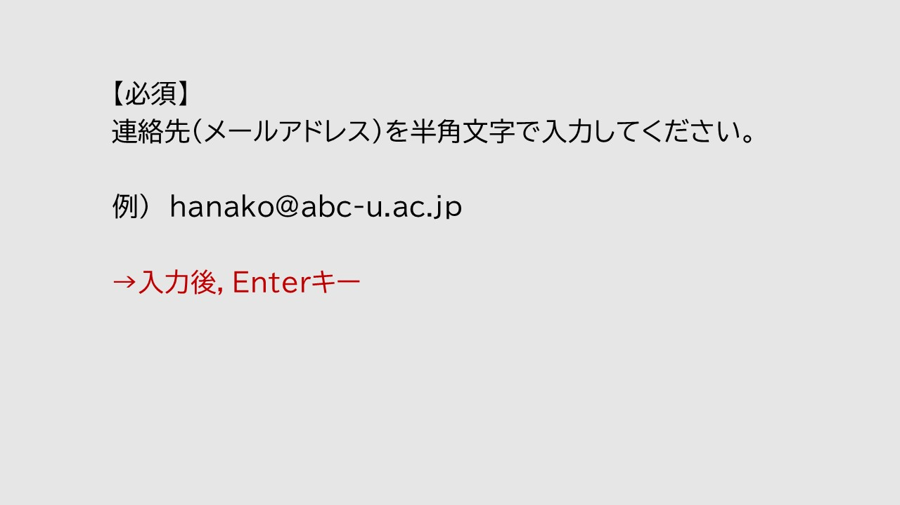
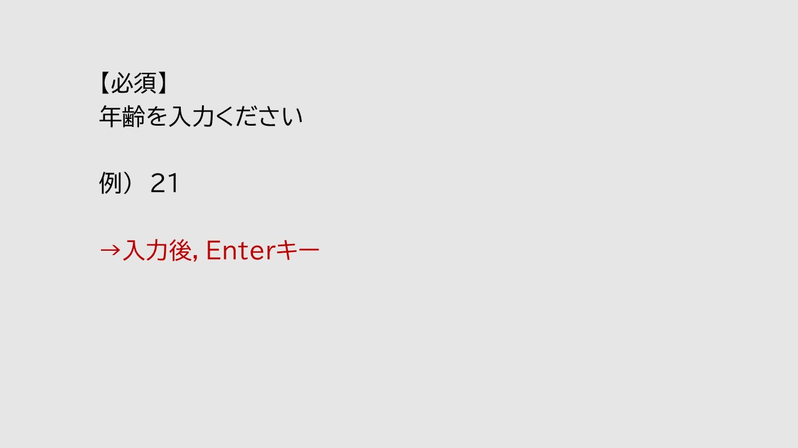
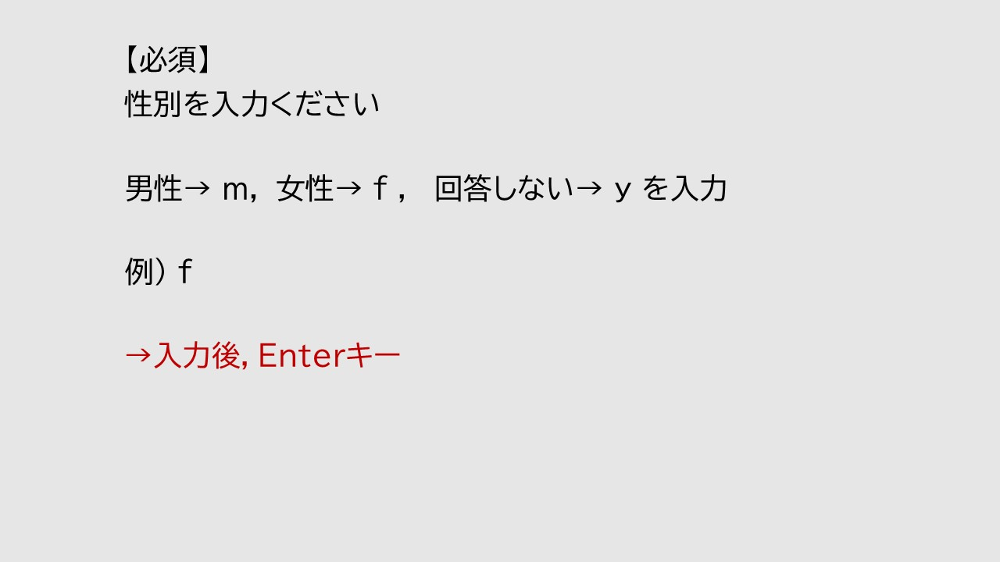
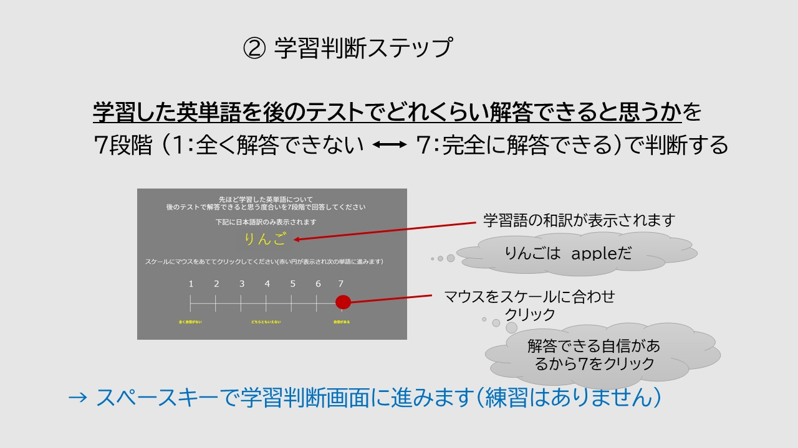

<!DOCTYPE html>
<html>
<head>
  <meta charset="UTF-8">
  <title>語彙学習実験</title>

  <!-- jsPsych 6.1.0 本体 -->
  <script src="https://cdn.jsdelivr.net/npm/jspsych@6.1.0/jspsych.js"></script>
  <!-- プラグイン -->
  <script src="https://cdn.jsdelivr.net/npm/jspsych@6.1.0/plugins/jspsych-html-keyboard-response.js"></script>
  <script src="https://cdn.jsdelivr.net/npm/jspsych@6.1.0/plugins/jspsych-html-button-response.js"></script>
  <script src="https://cdn.jsdelivr.net/npm/jspsych@6.1.0/plugins/jspsych-survey-html-form.js"></script>
  <script src="https://cdn.jsdelivr.net/npm/jspsych@6.1.0/plugins/jspsych-html-slider-response.js"></script>
  <script src="https://cdn.jsdelivr.net/npm/jspsych@6.1.0/plugins/jspsych-call-function.js"></script>
  <!-- CSS -->
  <link rel="stylesheet" href="https://cdn.jsdelivr.net/npm/jspsych@6.1.0/css/jspsych.css">

  <style>
    /* ── 全体背景 ── */
    body, .jspsych-display-element {
      background-color: black !important;
      color: white;
    }
    /* ── 画像 ── */
    img { display: block; margin: 8px auto; }
    .inst-img  { width: 85%; max-height: 65vh; object-fit: contain; }
    .learn-img { width: 65%; max-height: 50vh; object-fit: contain; }
    /* ── ボタン ── */
    .jspsych-btn {
      background-color: #333 !important;
      color: white !important;
      border: 1px solid #888 !important;
      margin: 6px;
      padding: 8px 20px;
    }
    /* ── テキスト入力 ── */
    input[type="text"], input[type="number"] {
      background-color: #111;
      color: white;
      border: 1px solid #aaa;
      font-size: 1.2em;
      padding: 8px 16px;
      width: 350px;
      text-align: center;
      display: block;
      margin: 12px auto;
    }
    /* ── survey-html-form の送信ボタン ── */
    .jspsych-survey-html-form input[type="submit"],
    .jspsych-survey-html-form button[type="submit"] {
      background-color: #333;
      color: white;
      border: 1px solid #888;
      padding: 8px 24px;
      cursor: pointer;
      margin-top: 14px;
      font-size: 1em;
    }
    /* ── JOL スライダー ── */
    .jspsych-html-slider-response-container { color: white; }
    label.jspsych-html-slider-response-label { color: white !important; font-size: 0.85em; }
    .jspsych-html-slider-response-submit {
      background-color: #333; color: white; border: 1px solid #888;
      padding: 8px 24px; margin-top: 14px; cursor: pointer;
    }
    /* ── 指示テキスト ── */
    .key-hint {
      font-size: 0.95em;
      margin-top: 18px;
      color: #ddd;
    }
    .key-hint strong { color: white; }
  </style>
</head>
<body>
<script>

// ============================================================
// 刺激データ
// ============================================================

var PRACTICE_WORDS = [
  {word_id:'P001', word:'apple',     image_file:'demo1.png'},
  {word_id:'P002', word:'send',      image_file:'demo2.png'},
  {word_id:'P003', word:'beautiful', image_file:'demo3.png'}
];

var MAIN_WORDS = [
  {word_id:'V1S1', word:'frib',        image_file:'V1S1.PNG',  meaning:'～を盗む（動詞）',    test_word:'fr _ _',         test_image:'test_V1S1.png'},
  {word_id:'V1S2', word:'glorp',       image_file:'V1S2.PNG',  meaning:'～を転がす（動詞）',  test_word:'gl _ _ p',       test_image:'test_V1S2.png'},
  {word_id:'V2S1', word:'smorble',     image_file:'V2S1.PNG',  meaning:'～を動かす（動詞）',  test_word:'sm _ _ ble',     test_image:'test_V2S1.png'},
  {word_id:'V3S1', word:'flindrocate', image_file:'V3S1.PNG',  meaning:'～を分割する（動詞）', test_word:'fl _ _ drocate', test_image:'test_V3S1.png'},
  {word_id:'V3S2', word:'threnditize', image_file:'V3S2.PNG',  meaning:'～を固定する（動詞）', test_word:'thr _ _ ditize', test_image:'test_V3S2.png'},
  {word_id:'A1S1', word:'cribble',    image_file:'A1S1.PNG',  meaning:'鮮やかな（形容詞）',  test_word:'cr _ _ ble',     test_image:'test_A1S1.png'},
  {word_id:'A1S2', word:'fleng',      image_file:'A1S2.PNG',  meaning:'柔らかい（形容詞）',  test_word:'fl _ _ g',       test_image:'test_A1S2.png'},
  {word_id:'A2S1', word:'zibble',     image_file:'A2S1.PNG',  meaning:'金色の（形容詞）',    test_word:'z _ _ ble',      test_image:'test_A2S1.png'},
  {word_id:'A2S2', word:'blontish',   image_file:'A2S2.PNG',  meaning:'変な（形容詞）',      test_word:'bl _ _tish',     test_image:'test_A2S2.png'},
  {word_id:'A3S1', word:'plonkical',  image_file:'A3S1.PNG',  meaning:'勇敢な（形容詞）',    test_word:'pl _ _ kical',   test_image:'test_A3S1.png'},
  {word_id:'N1S1', word:'zlitz',      image_file:'N1S1.PNG',  meaning:'紙片（名詞）',        test_word:'zl _ _ z',       test_image:'test_N1S1.png'},
  {word_id:'N1S2', word:'flurp',      image_file:'N1S2.PNG',  meaning:'服装（名詞）',        test_word:'fl _ _ p',       test_image:'test_N1S2.png'},
  {word_id:'N2S1', word:'sprock',     image_file:'N2S1.PNG',  meaning:'部品（名詞）',        test_word:'spr _ _ k',      test_image:'test_N2S1.png'},
  {word_id:'N2S2', word:'flentity',   image_file:'N2S2.PNG',  meaning:'めまい（名詞）',      test_word:'fl _ _ tity',    test_image:'test_N2S2.png'},
  {word_id:'N3S1', word:'soprotune',  image_file:'N3S1.PNG',  meaning:'リズム（名詞）',      test_word:'s _ _ rotune',   test_image:'test_N3S1.png'}
];

// ============================================================
// ユーティリティ
// ============================================================
function shuffle(arr) {
  var a = arr.slice();
  for (var i = a.length - 1; i > 0; i--) {
    var j = Math.floor(Math.random() * (i + 1));
    var t = a[i]; a[i] = a[j]; a[j] = t;
  }
  return a;
}

// ============================================================
// 実験状態変数
// ============================================================
var prac_queue   = [];
var prac_learned = [];
var prac_current = null;

var main_queue   = [];
var main_learned = [];
var main_current = null;
var main_start_t = null;
var TIME_LIMIT_MS = 600000; // 10分 = 600,000 ms

var test_list  = [];
var test_index = 0;

// ============================================================
// ヘルパー：教示画像 + スペースキー
// ============================================================
function inst_screen(img_src) {
  return {
    type: 'html-keyboard-response',
    stimulus: '',
    choices: [' ']
  };
}

// ============================================================
// タイムライン構築
// ============================================================
var timeline = [];

// ── 1. 教示画面 1, 2 ────────────────────────────────────────
timeline.push(inst_screen('start_1.PNG'));
timeline.push(inst_screen('start_2.PNG'));

// ── 2. 参加者情報入力 ───────────────────────────────────────

// 名前
timeline.push({
  type: 'survey-html-form',
  html: '' +
        '<input type="text" name="participant_name" ' +
        'placeholder="ここへ入力してください..." required autofocus>',
  button_label: '次へ',
  on_finish: function(d) {
    var r = typeof d.responses === 'string' ? JSON.parse(d.responses) : d.responses;
    jsPsych.data.addProperties({participant_name: r.participant_name || ''});
  }
});

// メール
timeline.push({
  type: 'survey-html-form',
  html: '' +
        '<p style="color:yellow;font-size:0.8em;">＊ご注意＊テンキーは使えません</p>' +
        '<input type="text" name="participant_mail" ' +
        'placeholder="ここへ入力してください..." required autofocus>',
  button_label: '次へ',
  on_finish: function(d) {
    var r = typeof d.responses === 'string' ? JSON.parse(d.responses) : d.responses;
    jsPsych.data.addProperties({participant_mail: r.participant_mail || ''});
  }
});

// 年齢
timeline.push({
  type: 'survey-html-form',
  html: '' +
        '<p style="color:yellow;font-size:0.8em;">＊ご注意＊テンキーは使えません</p>' +
        '<input type="text" name="participant_age" ' +
        'placeholder="ここへ入力してください..." required autofocus>',
  button_label: '次へ',
  on_finish: function(d) {
    var r = typeof d.responses === 'string' ? JSON.parse(d.responses) : d.responses;
    jsPsych.data.addProperties({participant_age: r.participant_age || ''});
  }
});

// 性別（m / f / y キー）
timeline.push({
  type: 'html-keyboard-response',
  stimulus: '',
  choices: ['m', 'f', 'y'],
  on_finish: function(d) {
    var k = String.fromCharCode(d.key_press).toLowerCase();
    var sex = k === 'm' ? '男性' : k === 'f' ? '女性' : '回答しない';
    jsPsych.data.addProperties({participant_sex: sex});
  }
});

// ── 3. 実験説明 ─────────────────────────────────────────────
timeline.push(inst_screen('setumei_1.PNG'));
timeline.push(inst_screen('setumei_2.PNG'));

// ── 4. 練習試行（ドロップ法） ───────────────────────────────

// 初期化
timeline.push({
  type: 'call-function',
  func: function() {
    prac_queue   = shuffle(PRACTICE_WORDS.slice());
    prac_learned = [];
  }
});

// 練習 1 試行ずつループ
var prac_trial = {
  type: 'html-keyboard-response',
  stimulus: function() {
    prac_current = prac_queue[0];
    return '' +
           '<p class="key-hint">' +
           '学習完了：<strong>E キー</strong>　　　' +
           'もう一度学習する：<strong>スペースキー</strong>' +
           '</p>';
  },
  choices: ['e', ' '],
  on_finish: function(d) {
    var key = String.fromCharCode(d.key_press).toLowerCase();
    d.word_id      = prac_current.word_id;
    d.word         = prac_current.word;
    d.response_key = key;
    d.phase        = 'practice';
    if (key === 'e') {
      prac_learned.push(prac_current.word_id);
      prac_queue.shift();
    } else {
      prac_queue.push(prac_queue.shift()); // 末尾へ移動
    }
  }
};

timeline.push({
  timeline: [prac_trial],
  loop_function: function() {
    return prac_queue.length > 0 && prac_learned.length < PRACTICE_WORDS.length;
  }
});

// ── 5. 本試行前教示 ─────────────────────────────────────────
timeline.push(inst_screen('gakusyu.PNG'));

// 本試行 初期化
timeline.push({
  type: 'call-function',
  func: function() {
    main_queue   = shuffle(MAIN_WORDS.slice());
    main_learned = [];
    main_start_t = Date.now();
  }
});

// 本試行 1 試行ずつループ（10分タイマー付き）
var main_trial = {
  type: 'html-keyboard-response',
  stimulus: function() {
    main_current = main_queue[0];
    var elapsed = Date.now() - main_start_t;
    var msg = '';
    if (elapsed >= 298000 && elapsed < 305000) {
      msg = '<p style="color:yellow;margin-top:8px;">5分経過しました。残り5分です。</p>';
    } else if (elapsed >= 538000 && elapsed < 545000) {
      msg = '<p style="color:yellow;margin-top:8px;">残り時間あと1分です。</p>';
    }
    return '' +
           '<p class="key-hint">' +
           '学習完了：<strong>E キー</strong>　　　' +
           'もう一度学習する：<strong>スペースバー</strong>' +
           '</p>' + msg;
  },
  choices: ['e', ' '],
  post_trial_gap: 300,
  on_finish: function(d) {
    var key = String.fromCharCode(d.key_press).toLowerCase();
    d.word_id      = main_current.word_id;
    d.word         = main_current.word;
    d.response_key = key;
    d.phase        = 'main_learning';
    if (key === 'e') {
      main_learned.push(main_current.word);
      main_queue.shift();
    } else {
      main_queue.push(main_queue.shift());
    }
  }
};

timeline.push({
  timeline: [main_trial],
  loop_function: function() {
    if ((Date.now() - main_start_t) >= TIME_LIMIT_MS) return false;
    if (main_learned.length >= MAIN_WORDS.length)     return false;
    if (main_queue.length === 0)                       return false;
    return true;
  }
});

// ── 6. JOL 教示 & 評定（全15語、順番通り） ─────────────────
timeline.push({
  type: 'html-keyboard-response',
  stimulus: '',
  choices: [' '],
  response_ends_trial: true,
  post_trial_gap: 200
});

for (var wi = 0; wi < MAIN_WORDS.length; wi++) {
  (function(wd) {
    timeline.push({
      type: 'html-button-response',
      stimulus:
        '<p style="font-size:0.9em;color:#ddd;">' +
          '先ほど学習した英単語について<br>' +
          '後のテストで解答できると思う度合いを7段階で回答してください<br>' +
          '数字をクリックして回答してください' +
        '</p>' +
        '<p style="color:yellow;font-size:1.5em;font-weight:bold;margin:16px 0;">' +
          wd.meaning +
        '</p>' +
        '<p style="color:#aaa;font-size:0.85em;margin-bottom:8px;">' +
          '1: 全く自信がない　　　4: どちらともいえない　　　7: 自信がある' +
        '</p>',
      choices: ['1', '2', '3', '4', '5', '6', '7'],
      button_html:
        '<button class="jspsych-btn" ' +
        'style="min-width:56px;font-size:1.4em;margin:4px;padding:10px 14px;">%choice%</button>',
      on_finish: function(d) {
        d.word_id    = wd.word_id;
        d.word       = wd.word;
        d.meaning    = wd.meaning;
        d.jol_rating = parseInt(d.button_pressed) + 1;
        d.phase      = 'jol';
      }
    });
  })(MAIN_WORDS[wi]);
}

// ── 7. 計算課題教示 & 課題（60秒） ──────────────────────────
timeline.push(inst_screen('keisan_modified.PNG'));

timeline.push({
  type: 'html-keyboard-response',
  stimulus:
    '<div style="text-align:center;">' +
      '<p id="math-problem" style="font-size:2.5em;margin-bottom:10px;">準備中...</p>' +
      '<p id="math-answer"  style="font-size:2em;color:yellow;margin:0;">|</p>' +
      '<p style="font-size:0.85em;color:#aaa;margin-top:16px;">' +
        'Enter キーで次の問題へ進んでください<br>' +
        'Backspace で1文字削除できます' +
      '</p>' +
    '</div>',
  choices: jsPsych.NO_KEYS,
  trial_duration: 60000,
  on_start: function() {
    var _ans = '';
    var _handler;
    function _gen() {
      var n1 = Math.floor(Math.random() * 80) + 20;
      var n2 = Math.floor(Math.random() * (n1 - 10)) + 10;
      var ep = document.getElementById('math-problem');
      var ea = document.getElementById('math-answer');
      if (ep) ep.textContent = n1 + ' \u2212 ' + n2 + ' = ?'; // − 記号
      _ans = '';
      if (ea) ea.textContent = '|';
    }
    setTimeout(function() {
      _gen();
      _handler = function(e) {
        if (!document.getElementById('math-problem')) {
          document.removeEventListener('keydown', _handler);
          return;
        }
        if (e.key >= '0' && e.key <= '9') {
          _ans += e.key;
          document.getElementById('math-answer').textContent = _ans + '|';
        } else if (e.key === 'Backspace') {
          _ans = _ans.slice(0, -1);
          document.getElementById('math-answer').textContent = (_ans || '') + '|';
        } else if (e.key === 'Enter') {
          _gen();
        }
        e.preventDefault();
      };
      document.addEventListener('keydown', _handler);
    }, 200);
  }
});

// ── 8. テスト教示 & テスト（ランダム順） ─────────────────────
timeline.push(inst_screen('test_modified.PNG'));

// テスト初期化
timeline.push({
  type: 'call-function',
  func: function() {
    test_list  = shuffle(MAIN_WORDS.slice());
    test_index = 0;
  }
});

// テスト 1 語ずつループ
var test_trial = {
  type: 'survey-html-form',
  html: function() {
    var w = test_list[test_index];
    return '' +
           '<p style="color:#ddd;font-size:0.9em;margin-bottom:8px;">' +
             '下線部分（２文字分）のスペルをキー入力し，単語を完成してください' +
           '</p>' +
           '<input type="text" name="test_answer" ' +
             'placeholder="ここへ入力してください..." autofocus>' +
           '<p style="color:#aaa;font-size:0.8em;margin-top:6px;">' +
             '解答欄をクリックするとカーソルが表示されます' +
           '</p>';
  },
  button_label: '次へ',
  on_finish: function(d) {
    var w = test_list[test_index];
    var r = typeof d.responses === 'string' ? JSON.parse(d.responses) : d.responses;
    d.word_id     = w.word_id;
    d.word        = w.word;
    d.test_word   = w.test_word;
    d.test_answer = (r && r.test_answer) ? r.test_answer : '';
    d.phase       = 'test';
    test_index++;
  }
};

timeline.push({
  timeline: [test_trial],
  loop_function: function() { return test_index < test_list.length; }
});

// ── 9. 終了画面1：データ送信 ────────────────────────────────
var GAS_URL = 'https://script.google.com/macros/s/AKfycbzEgeGRiy6856TYC05_BEM4GXCuwufCS_INheoPvJwpEfDTyHBP6xMTmaOfWm4fGfjspA/exec';

timeline.push({
  type: 'html-button-response',
  stimulus:
    '<div style="text-align:center;padding:40px 20px;">' +
      '<h2 style="color:white;">ご協力ありがとうございました</h2>' +
      '<p style="color:#ddd;margin-top:20px;">' +
        '下のボタンを押してデータを送信してください。' +
      '</p>' +
      '<p id="send-status" style="color:yellow;margin-top:16px;font-size:0.95em;"></p>' +
    '</div>',
  choices: ['📤 データを送信する'],
  button_html:
    '<button class="jspsych-btn" ' +
    'style="font-size:1.1em;padding:12px 28px;margin-top:10px;">%choice%</button>',
  on_finish: function() {
    var allData = jsPsych.data.get().values();
    fetch(GAS_URL, {
      method: 'POST',
      mode: 'no-cors',
      headers: { 'Content-Type': 'application/json' },
      body: JSON.stringify(allData)
    }).then(function() {
      var el = document.getElementById('send-status');
      if (el) el.textContent = '✅ 送信完了しました。次の画面へお進みください。';
    }).catch(function() {
      var el = document.getElementById('send-status');
      if (el) el.textContent = '⚠️ 送信に失敗しました。次の画面へお進みください。';
    });
  }
});

// ── 9. 終了画面2：語彙知識調査へ ────────────────────────────
timeline.push({
  type: 'html-keyboard-response',
  stimulus:
    '<div style="text-align:center;padding:40px 20px;">' +
      '<p style="color:#ddd;font-size:1em;">' +
        '続けて，下のリンクより語彙知識調査（50問・約10分程度）に進んでください。' +
      '</p>' +
      '<p style="margin-top:24px;">' +
        '<a href="https://forms.gle/DNHxLhvBr1kCJWxW9" target="_blank" ' +
           'style="color:lightblue;font-size:1.2em;">' +
          '→ 語彙知識調査（50問・約10分程度）に進む（クリック）' +
        '</a>' +
      '</p>' +
    '</div>',
  choices: jsPsych.NO_KEYS
});

// ============================================================
// 実行
// ============================================================
jsPsych.init({
  timeline: timeline,
  on_finish: function() {
    // 実験終了（データ保存は終了画面1のボタンで実施済み）
  }
});

</script>
</body>
</html>
